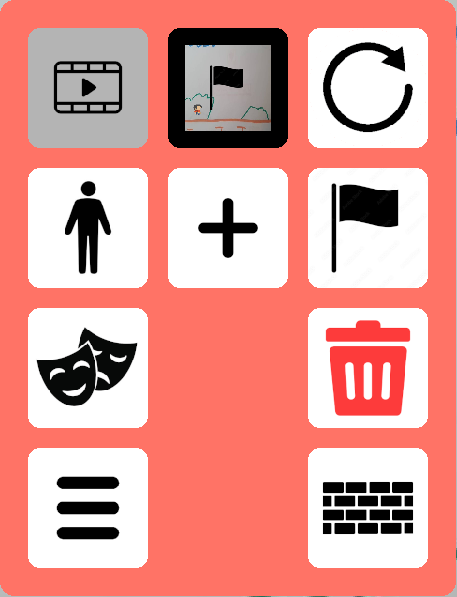
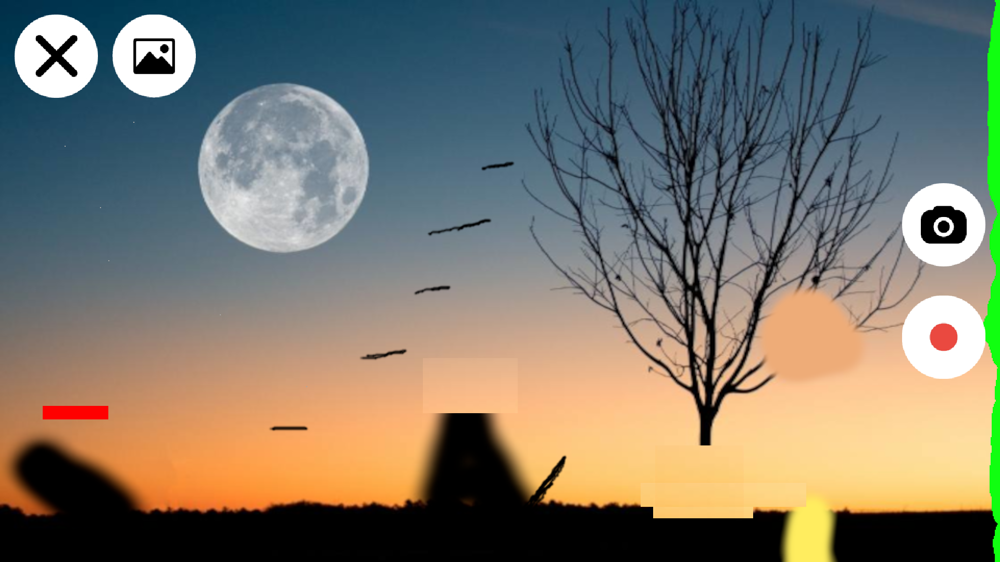
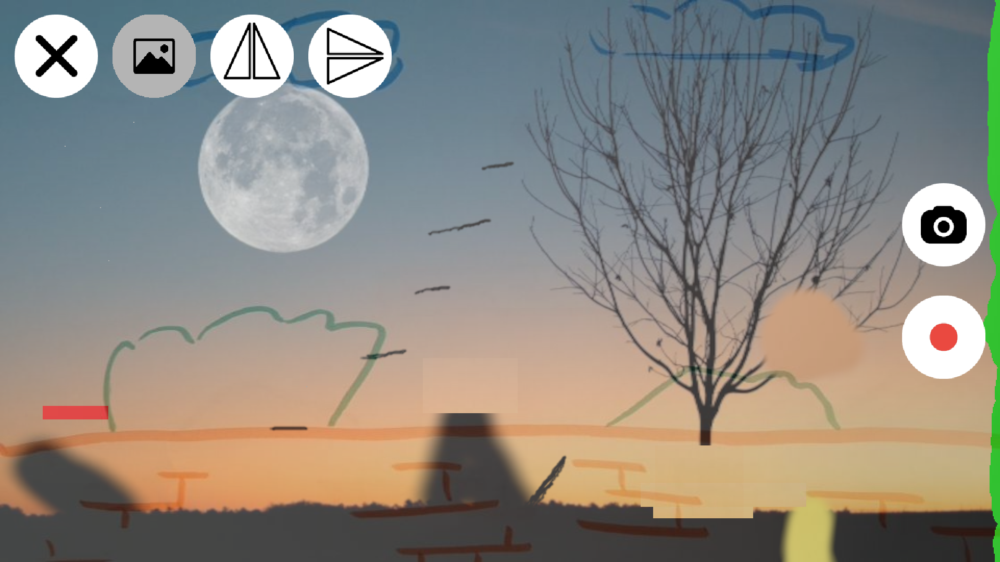
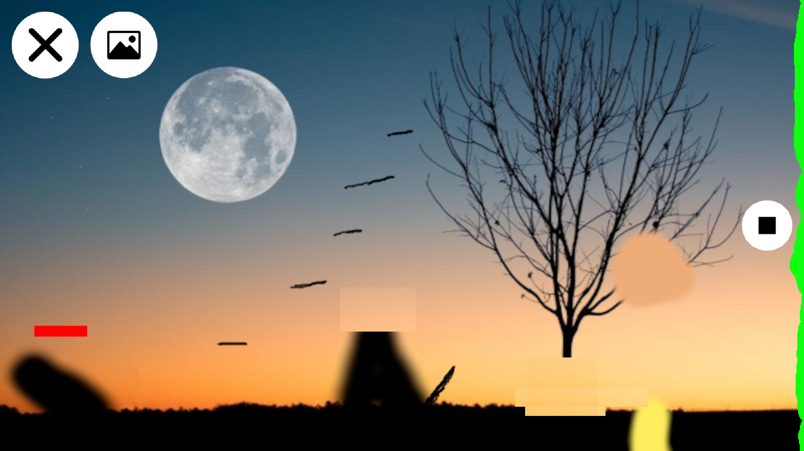
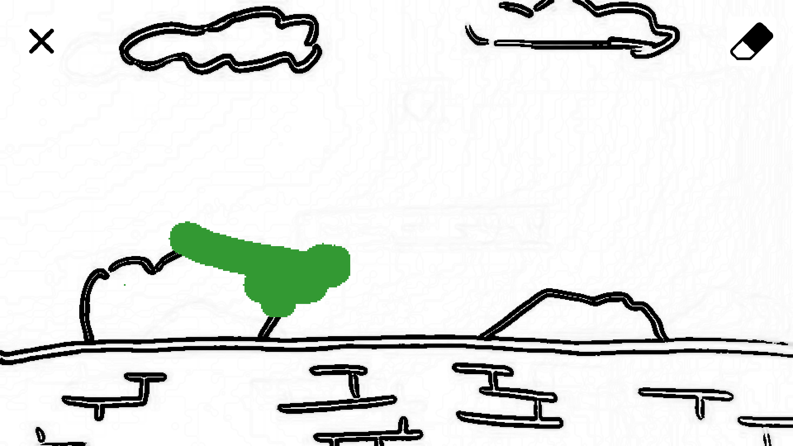
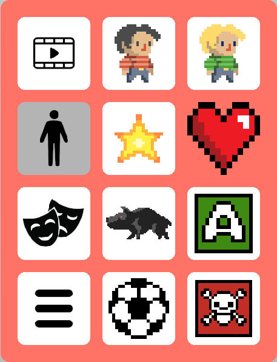

The scenes tab let's you manage and edit the scenes of the level.
Adds a new scene and takes you to camera mode.
Retakes the picture/video of the current scene. Takes you to camera mode.
Sets the current scene to the start scene of the level.
Deletes the current scene.
Allows you to remove unwanted edges from the current scene. Takes you to edit edges mode.

Takes a picture and saves it to the new/current scene.
Starts recording a video.
Toggles scene overlay.
Exits camera mode. No changes are made to the level.

The scene overlay shows a transparent picture of the scene that was selected before you entered camera mode. If the selected scene contains a video, the first frame of that video is shown.
Mirrors the scene overlay horizontally. This is useful for aligning doors on the left and right edges of scenes.
Mirrors the scene overlay vertically. This is useful for aligning doors on the top and bottom edges of scenes.

Finishes recording and saves the video to the new/current scene.

You can erase unwanted edges in the scene. Draw with your finger on the screen to cover up edges with green marker. Players/enemies/balls will not collide with edges that are covered up.
Toggles the erase tool, which let's you erase green markings in the same way that you draw them.
Exits edit edges mode and saves your markings.

The objects tab let's you add and remove objects from the scene.
Adds a default player character, Tim, to the scene.
Adds a Kim player character to the scene. If both Tim and Kim exist in the same scene, they can be controlled separately on the left and right halves of the screen. This let's you build co-op levels.
Adds a star to the scene. The level is won when a player character touches a star.
Adds a heart to the scene. (... heart description)
Adds an enemy to the scene.
Adds a ball to the scene.
Adds an action button to the scene. Read More
Adds a death area to the scene. Players and enemies die if they touch edges that are covered by a death area.
Some text.
Some text.
Some text.